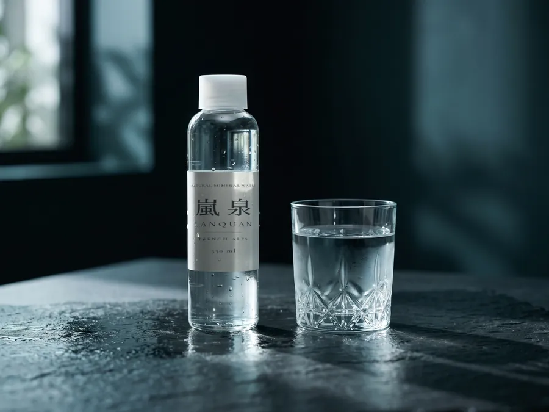
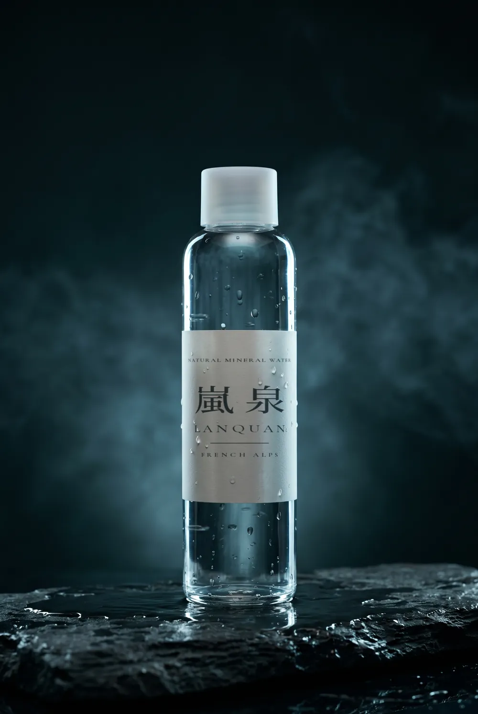
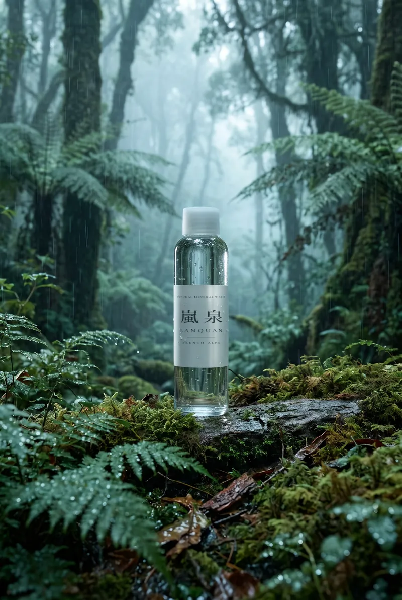
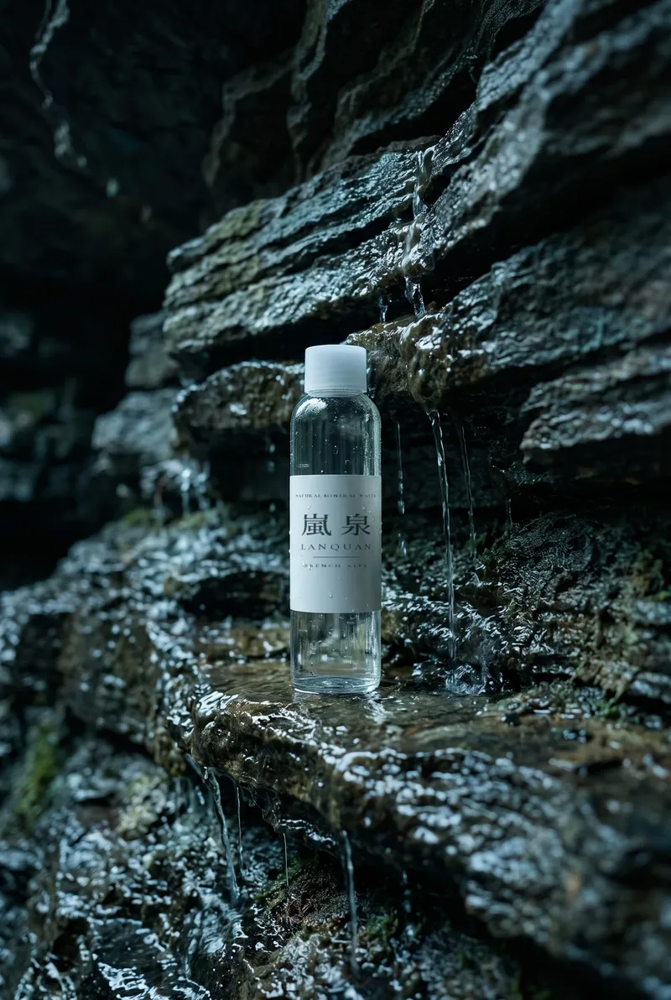
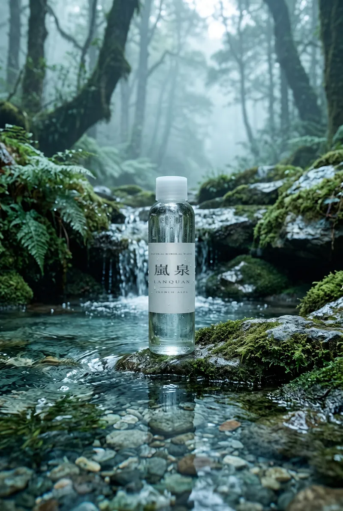
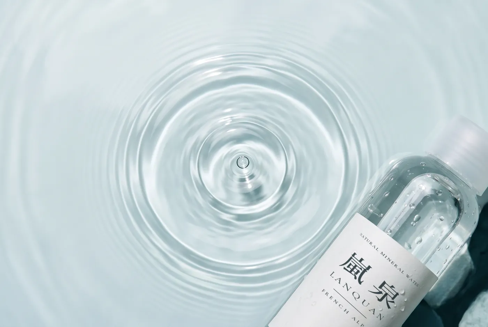
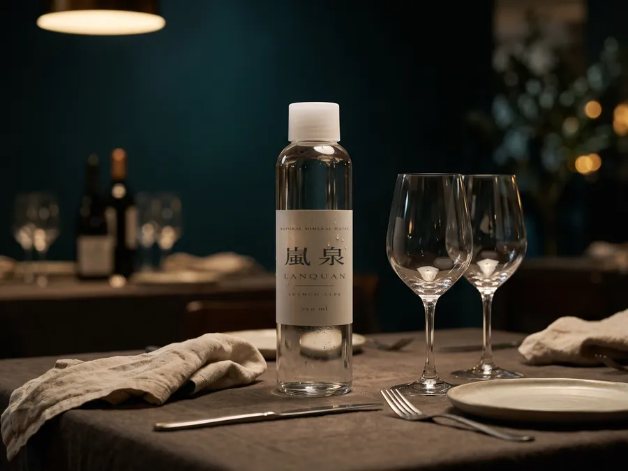
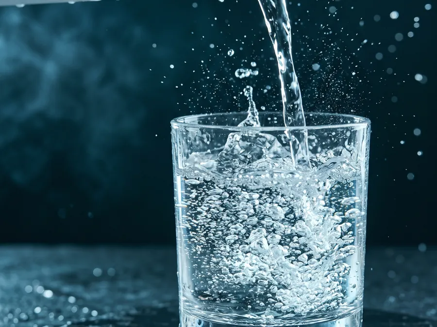
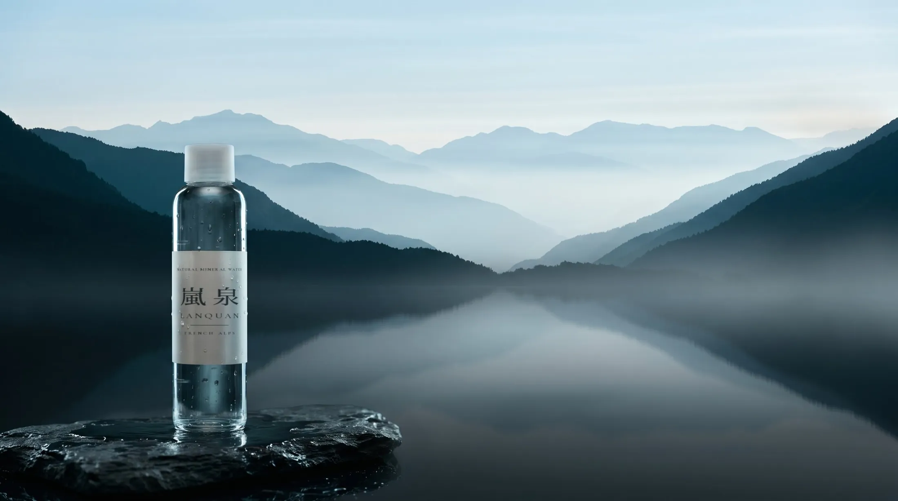

330 ml
靜水・玻璃瓶
一人份的安靜。適合佐餐、會議桌，或一段獨處的午後。
NT$ 45 ／ 瓶
NATURAL MINERAL WATER
嵐泉天然礦泉水，源自法國阿爾卑斯山的冰川砂層。雨水與融雪在山裡走了很久，才成為你杯中的這一口。不添加，不修飾，於源頭直接裝瓶。

THE SOURCE

雨與融雪落在阿爾卑斯山的高處，穿過苔蘚與林地，緩緩滲入土壤。

在冰川遺留的砂層之間行走 [過濾年數] 年。每一層砂石都是濾網，也留下屬於這座山的礦物。

於海拔 [海拔高度] 公尺的泉口自然湧出，不接觸外界空氣，在源頭直接裝瓶。
COMPOSITION
每公升含鈣 80 mg、鎂 26 mg，鈉僅約 6.5 mg，總溶解固體約 350 mg/L，屬中度礦物質含量的天然礦泉水。口感的圓潤，來自冰川砂層賦予的礦物比例。
檢驗單位：[檢驗機構名稱] 報告編號：[編號]

| 鈣Ca²⁺含量豐富，提供骨骼所需礦物質 | 80mg/L |
|---|---|
| 鎂Mg²⁺與鈣維持約 3:1 的平衡比例 | 26mg/L |
| 鉀K⁺微量存在，維持電解質平衡 | 1mg/L |
| 鈉Na⁺低鈉，遠低於低鈉標準 20 mg/L | 6.5–6.9mg/L |
| 偏矽酸H₂SiO₃以二氧化矽（SiO₂）標示約 14 mg/L | 14–15mg/L |
| 總溶解固體TDS中度礦物質含量 | 345–357mg/L |
| 酸鹼值pH接近中性的微鹼值 | 7.2 |
THE RANGE

330 ml
一人份的安靜。適合佐餐、會議桌，或一段獨處的午後。
NT$ 45 ／ 瓶

750 ml
為分享而生的餐桌尺寸。水質柔順，不搶走料理與酒的風味。
NT$ 45 ／ 瓶

750 ml
細緻而短促的氣泡，在舌尖輕輕散開，留下乾淨的尾韻。
NT$ 45 ／ 瓶
